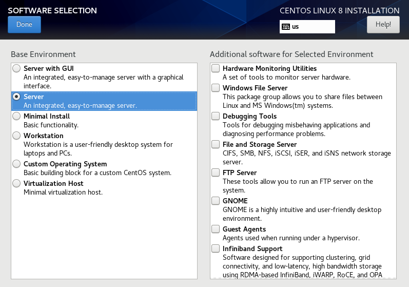

Linux 发行版
Ubuntu
安装系统
系统版本：
- Server：默认无桌面环境；在编译时优化了某些选项；支持多处理器对称技术和NUMA；服务器版本的内核时钟频率由桌面的100hz转为1khz（参考）。
Ubuntu默认采用的文件系统格式为ext4，默认除根目录和/boot外，不会为其他目录挂载分区。
软件管理
软件源配置
添加镜像站点加速。国内的站点包括：
- 阿里云：https://developer.aliyun.com/mirror/ubuntu
- 清华：https://mirrors.tuna.tsinghua.edu.cn/ubuntu（
Certificate verification failed） - 中科大：https://mirrors.ustc.edu.cn/ubuntu
- 网易：http://mirrors.163.com/ubuntu
安装服务器版本过程中，可以设置镜像站点。
编辑软件源配置文件：
sudo vi /etc/apt/sources.list
修改配置文件中的站点为镜像站点。
更新软件源信息：
sudo apt update
如果需要使用代理访问网络，则设置/etc/apt/apt.conf.d/00aptproxy（apt不适用系统代理环境变量）：
Acquire::http::proxy "http://[<domain\user>:<password>@]<yourproxyserver>:<Port>";
Acquire::https::proxy "http://[<domain\user>:<password>@]<yourproxyserver>:<Port>";
Acquire::ftp::proxy "http://[<domain\user>:<password>@]<yourproxyserver>:<Port>";
如果代理需要认证，则需要配置用户名和密码
[<domain\user>:<password>@]。
常见问题
-
Certificate verification failed：（容器）使用https协议需要ca-certificates。使用基于
http的镜像源。或者手动下载安装ca-certificates及其依赖文件。
软件管理工具
apt-get
apt-get是其他APT工具的后端，如aptitude，synaptic和wajig。
apt-get update # 从软件源同步软件包索引
upgrade # 升级软件包到最新版本
dist-upgrade # 系统重大升级(可能移除某些软件包)
install|reinstall PKG[=version] --download-only
remove|purge PKG # purge还移除配置文件
autoremove # 移除系统中不需要的软件包
download PKG[=version] # 下载软件包到当前目录
# 不能指定下载位置
clean|autoclean # 清理本地仓库，autoclean清理不再使用的缓存文件
apt-get changelog # 获取软件包的改动历史
remove将保留用户做过修改的配置文件（以防以外卸载导致用户配置丢失），而purge将移除所有相关文件（包括之前卸载过的软件，用户主目录下的文件除外）。==手动删除remove保留的配置文件可能导致重装软件出现问题。==
install --reinstall => reinstall；remove --purge => purge
选项：
-a,--host-architecture=architecture：
apt-cache
查询APT缓存。
apt-cahce gencaches # 生成缓存，其他命令如需要会调用
stats # 显示缓存统计信息
search REGEX
-f,--full # 列出所有版本的信息
-n,--names-only # 仅搜索包名
pkgnames PREFIX # 显示匹配前缀的包名
showpkg PKG # 显示软件包信息
show PKG # 显示软件包信息(更多详情)
-a,--all-versions # 显示所有可用版本
showsrc PKG # 显示软件源码包(必须source.list中配置源码源)
depends PKG # 显示依赖信息(包括冲突包)
--recurse # 递归解析依赖
apt
apt封装了apt-get、apt-cache等后端工具的常用命令，并对选项默认值做了部分改动。
查找软件
sudo apt search PACKAGE # -> apt-cache search
sudo apt list PACKAGE [--installed] # 列出（已安装）软件包信息*
sudo apt show PACKAGE # 列出软件包详细信息（list --full）
PACKAGE支持POSIX正则表达式（不支持\d等）。
安装/卸载软件
sudo apt install PACKAGE # 安装软件包
sudo apt remove|purge PACKAGE # 移除软件包
sudo apt autoremove
安装桌面环境的交互命令：
sudo apt install tasksel -y
sudo tasksel
sudo apt install ./<file>.deb
软件升级
安装操作系统后首先对系统进行升级。
sudo apt list --upgradable # 列出所有可升级软件包的信息
sudo apt upgrade # 升级软件包，更新系统
sudo apt full-upgrade
长期支持版升级
sudo apt update && sudo apt upgrade && sudo apt dist-upgrade
sudo apt install update-manager-core
# edit /etc/update-manager/release-upgrades
Prompt=lts # normal
sudo do-release-upgrade
# -d upgrade to development release*
*：The new LTS release isn’t made available todo-release-upgradeuntil its first point release (e.g.,22.04.1, usually comes a few months after the initial release date). If you don’t see an available release, add the-doption to upgrade to the development release.
离线安装软件包
下载离线安装包到指定位置：apt-get可以将包下载到当前目录。
app=mysql-server
depends=$(apt-cache depends --recurse --no-recommends --no-suggests --no-conflicts --no-breaks --no-replaces --no-enhances $app| grep "^\w" | sort -u)
apt-get download $depends
dpkg-scanpackages扫描目录（包括子目录）并创建包索引文件Packages.gz（给apt等工具查找和安装包使用）。
# sudo apt install dpkg-dev # <== dpkg-scanpackages
cd /path/to/repository
dpkg-scanpackages [--OPTS] . [OVERRIDE_FILE PATH_PREFIX] > Packages
gzip -9c Packages > Packages.gz #*
*：如果通过file://访问仓库，则使用Packages，如果通过http://等方式，则使用的文件需要压缩为*.xz,*.bz2,*.gz。
-m：输出内容中包括包的所有版本（包括重复内容）；
path-prefix：添加到输出内容的Filename字段；等效于PACKAGE_APTH前添加前缀；OVERRIDE_FILE包含包的附加信息（可选，或设置为/dev/null）。
创建本地源
vi /etc/apt/sources.list.d/local.list
deb [trusted=yes] file:/home/user/download/packages/ ./ # 本地文件*
deb [trusted=yes] http://local-server/debs/amd64/ ./ # HTTP服务=> /var/www/debs/amd64
sudo apt-get update
源声明中，第一列为包类型（软件包或源代码包），第二列固定参数为仓库URL，第三列为发行版名称（通常本地源使用
./代替），后两者组成索引文件Packages或Packages.gz所在目录。索引文件声明了软件包相对于索引文件的位置，因此进行迁移部署时，应该保持扫描包时软件包与索引文件的相对位置不变。
使用apt等工具搜索安装软件。
sudo dpkg -i * # 不推荐直接安装目录下的所有包，可能有兼容性问题 sudo dpkg --configure -a
软件文件缺损
软件中心
遇到软件中心安装程序长时间不能完成或无响应
-
使用以下命令找到root的
dpkg进程ps -af | grep dpkg -
使用以下命令杀死该进程
sudo kill -9 PID -
然后可以继续安装软件
PPA
从软件源移除PPA：
sudo ls /etc/apt/sources.list.d #列出PPA名称
sudo rm -i /etc/apt/sources.list.d/PPA_Name.list #移除指定的PPA
网络接口配置
Ubuntu使用netplan，其配置文件：/etc/netplan/50-cloud-init.yaml（或00-installer-config.yaml）
示例：
network:
renderer: networkd # NetworkManager for desktop system
ethernets:
eth0: # WAN interface
dhcp4: true
eth1: # LAN interface
addresses: # static IP configuration
- 192.168.1.100/24
dhcp4: false
gateway4: 192.168.1.1
nameservers: # DNS servers
addresses:
- 223.5.5.5
- 223.6.6.6
search: []
version: 2
将dhcp4设置为true时，也可以人工设置部分参数，DHCP服务仅更新未设置的网络参数，如默认网关（影响路由表中默认路由信息生成）。
使用静态配置时，如果更新了网关，可能路由表中的条目没有及时更新，导致网络不可用。此时可使用DHCP动态刷新默认路由。
dhcp=true时，如果设置了IP地址，则此时接口同时具有动态和静态IP地址。
网络配置：https://ubuntu.com/server/docs/network-configuration。
防火墙ufw
ufw（Uncomplicated Firewall）为Ubuntu中的防火墙用户程序，其简化了iptables直接操作表链的命令。
ufw enable|disable|reload # enable重载防火墙并开机自启
ufw reset --force # 重置防火墙到安装状态，--force不确认直接执行
ufw logging on|off|LEVEL # 日志级别：off,low,medium,high,full（默认"low"）
ufw需要管理员权限（sudo）运行。使用--dry-run查看命令产生的修改，但不应用修改；即使不提供该选项，ufw默认也会在应用规则前提示用户要执行的操作。输出信息中
Anywhere表示any和0.0.0.0/0；。
ufw在启用时会首先清空防火墙规则表（以保证状态一致性），这可能导致已有连接中断（如果默认策略为拒绝）。ufw支持在启用前添加规则，即sudo ufw allow 22/tcp && ufw enable。该规则仍然会在启用防火墙时被清空，但防火墙在启用后相应端口的连接会保持。防火墙启用后，添加或删除规则不会再次清空规则表。
防火墙状态
ufw status [numbered|verbose] # 查看防火墙状态及ufw管理的规则
查看防火墙统计信息：
ufw show raw|builtins|before-rules|user-rules|after-rules|logging-rules|listening|added
规则配置
设置默认规则
ufw default allow|deny|reject [incoming|outgoing|routed] # 默认规则
设置收发规则
ufw allow|deny|reject|limit [in|out] [PORT[/PROTO]|APPNAME] [comment COMMENT] # 简洁模式
ufw allow|deny|reject|limit \ # 完整命令模式
[in|out] [on INTERFACE] \ # 方向和接口
[from SRC] [TO DEST] \ # IP地址：any表示所有地址，10.0.0.0/8表示网段
[PORT[/PROTO]|APPNAME] \ # 端口协议(默认tcp和udp)|服务，80,443,8080:8090指定多个(连续)端口
[comment COMMENT] # 规则说明
# ufw allow 53; ufw allow 25/tcp; ufw allow smtp; ufw allow in http comment "web service"
IPv6地址
2001:db8::/32（在/etc/default/ufw中启用IPv6防火墙）；如果设置规则时未指定IP地址且启用IPv6，则添加规则时将同时添加两条规则。其他协议包括：
ah/esp/gre（未指定端口时有效）；ipv6/igmp（未指定端口且指定IPv4地址）。
limit用于限制会话速率（防止暴力破解登录攻击，ufw limit ssh/tcp）。
上述命令默认将规则添加到规则列表末尾。
ufw insert NUM RULE # 插入规则到指定编号位置（原有规则编号自动更新）
ufw prepend RULE # 将已添加的规则置顶
NUM的值不能比现有规则编号大，因此要在规则列表末端添加规则就不提供insert NUM命令。==IPv6规则默认在所有IPv4规则之后==（虽然编号是连续的，但实际是两张独立的表），因此指定NUM时，其值必须在对应的IP协议规则编号范围内。
删除规则：
ufw delete RULE|NUM # 删除指定规则或对应编号规则
RULE同时匹配IPv4和IPv6规则时，将同时删除两条规则；删除规则时可不指定规则的说明。
设置路由规则
路由规则在收发规则语句前增加route关键字，以处理目的地址非本机的数据包。路由规则可同时指定in/out及其接口。
ufw route ACTION RULE
启用路由功能需开启IP转发功能，然后重启
ufw。
应用配置
在配置规则时，可使用应用名称代替端口协议配置。应用配置文件位于/etc/ufw/applications.d （/etc/services）。
[SomeService]
title=Some title
description=Some description
ports=12/udp|34|56,78:90/tcp
ufw app list # 列出已配置的应用名称，应用名为配置文件中节标题(SomeService)
ufw app update <name>|all # 更新应用相关的防火墙规则
桌面环境
字体
安装中文字体
sudo apt-get install ttf-wqy-microhei #文泉驿-微米黑
sudo apt-get install ttf-wqy-zenhei #文泉驿-正黑
sudo apt-get install xfonts-wqy #文泉驿-点阵宋体
列出系统字体
fc-list: lang=zh # list fonts
Elementary OS
Elementary OS基于Ubuntu。
常见问题
-
启动黑屏/花屏
更新显卡驱动程序（NVIDIA/ASPEED/...）。
-
欢迎屏幕之前有字符界面
更新grub设置。
sudo vi /boot/grub/grub.cfg # add quiet splash nomodeset sudo update-grub问题：系统无法在初始化阶段获得屏幕信息，导致进入欢迎界面以及登陆后的分辨率过低。
-
中文乱码
-
没有安装中文支持
-
没有中文字体
-
控制台不支持中文
-
Kali Linux
# edit /etc/apt/sources.list
deb https://mirrors.tuna.tsinghua.edu.cn/kali kali-rolling main non-free contrib
sudo apt install kali-linux-default
https://www.kali.org/docs/general-use/metapackages/
Kaili on WSL2*
Win-KeX provides a Kali Desktop Experience for WSL.
sudo apt install -y kali-win-kex
# Run in Kali
kex --win -s # start in Window mode with sound support
kex --esm --ip -s # start in Enhanced Session Mode
kex --sl -s # start in Seamless mode with sound support
Fedora/CentOS/RHEL
安装
CentOS/RHEL采用图形界面配置安装过程，在安装界面可配置工作站、服务器和带图形界面的服务器等多种安装方案（VMWare中选择简易安装将进入无人值守安装，默认安装带图形界面的服务器版本，无法进行自定义。可通过鼠标键盘选择界面中的配置项以中断自动安装过程）。

软件环境配置：
CentOS支持远程Web管理（Cockpit，默认端口9090（websm）)。
磁盘分区
CentOS自动分区得到的根目录空间较小（/目录最多分配50GiB），默认文件系统类型为LVM/XFS。XFS不支持文件系统扩容/缩容，因此若选择XFS，必须在安装系统时根据需求规划好分区方案。

软件管理
所有发行版可使用命令工具dnf/yum从软件源下载安装软件，桌面版可使用软件中心检查和安装更新。使用dnf/yum/rpm可以从本地软件包安装软件。
软件包管理器yum(dnf)
dnf(Dandified YUM)是yum(Yellow dog Updater, Modified)的下一个版本。
yum clean # 清除本地仓库缓存数据
dnf history
查找
yum repolist [all] # 列出可用仓库, all包括未启用仓库
yum-config-manager --enable <repo-name>
yum search <keyword> # 按关键字搜索软件包
yum list [installed] [PACKAGE] # 列出(已安装)软件包信息：包名|版本|源
yum info [installed] PACKAGE # 查看(已安装)软件包的信息
yum --showduplicates list httpd # 列出软件包的不同版本
软件安装源对应
*.repo文件的节名称，其中以@anaconda开头的为系统预装软件，软件源为installed为安装系统后手动安装的软件（通过软件源或RPM包）。
安装和更新
yum --installroot NEWROOT --releasever=/ install PACKAGE[-ver]
--enablerepo=<reponame> # 即时启用软件仓库(支持通配符)
--disablerepo=<reponame>
yum reinstall # 重新安装
yum check-update # 检查可用更新
yum update [PACKAGE]
如果未指定installroot选项，则默认安装根目录为/，否则使用指定的根目录（需要同时指定--releasever=/，否则报错），yum会==在指定位置创建完整的根文件树==并安装指定软件及其依赖项。每个根目录下安装的软件是相互独立的，即检查依赖项时在当前根目录下查找依赖项的安装记录（查找已安装软件时也可指定installroot选项，从而查找指定安装根目录下的软件）。
创建基本的运行环境：
yum --installroot=/root/tmproot/ --releasever=/ install bash coreutils grep创建新的根目录时使用的是真实系统的软件仓库设置；在已创建的根目录下继续安装软件将使用该根目录下的仓库配置
/NEWROOT/etc/yum.repos.d。如果要使用真实系统中的仓库源配置，将相应文件复制到上述目录。
卸载
yum remove <package>
yum autoremove [<package>] # 移除不再使用的依赖包
清理不再维护的软件
dnf install remove-retired-packages
remove-retired-packages
清理过时的软件，以下命令列出的软件可能不再需要，可检查并移除相应软件。
PKGS=$(dnf repoquery --unsatisfied) # 不满足依赖的软件(通常为空)
PKGS=$(dnf repoquery --duplicates) # 具有重复版本的软件
PKGS=$(dnf list extras) # 不在仓库中的软件
使用以下脚本清理旧版本内核
old_kernels=($(dnf repoquery --installonly --latest-limit=-1 -q))
dnf remove "${old_kernels[@]}"
Fedora系统升级
dnf upgrade --refresh
dnf install dnf-plugin-system-upgrade
dnf system-upgrade download --releasever=36 # 官方仅支持跨两个版本升级
dnf system-upgrade reboot
合并配置文件
dnf install rpmconf
rpmconf -a #
清理失效的符号连接：
dnf install symlinks
symlinks -r /usr | grep dangling # 检查列出的失效链接文件
symlinks -r -d /usr # 删除失效链接文件
安装
中文字体
yum groupinstall Fonts
软件源配置
Fedora
Fedora/CentOS 默认使用 Metalink 给出推荐的镜像列表，保证用户使用的镜像仓库足够新，并且能够尽快拿到安全更新，从而提供更好的安全性。所以通常情况下使用默认配置即可，无需更改配置文件。
由于 Metalink 需要从国外的 Fedora 项目服务器上获取元信息，所以对于校园内网、无国外访问等特殊情况，metalink 并不适用，此时可以将
/etc/yum.repos.d目录下的文件fedora.repo、fedora-updates.repo、fedora-modular.repo和fedora-updates-modular.repo中的metalink注释掉，并将baseurl的域名改为国内镜像站点。
https://mirrors.aliyun.com/fedora/https://mirrors.tuna.tsinghua.edu.cn/fedorabaseurl=MIRROR_SITE/releases/$releasever/Everything/$basearch/os/由于Fedora发行节奏较快，部分镜像源通常仅保留最近若干个版本的仓库数据（由于主站点对旧版本进行归档）。如果进行软件安装或升级时，发现无法获取仓库元数据（
repodata.xml），则需要更换为Metalink自动寻找仍支持当前系统版本的软件源，稍后尝试对系统进行升级。
CentOS
默认启用的软件源包括：Base、AppStream、Extras。
sudo cp /etc/yum.repos.d/CentOS-Base.repo /etc/yum.repos.d/CentOS-Base.repo.bak
编辑/etc/yum.repos.d/CentOS-Base.repo文件，在mirrorlist=开头行前面加#注释掉；并将baseurl=开头行取消注释，把该行内的域名（例如mirror.centos.org）替换为 ``https://mirrors.tuna.tsinghua.edu.cn/`。
sudo yum makecache # 生成缓存软件包元数据
epel
EPEL(Extra Packages for Enterprise Linux)是由Fedora Special Interest Group维护的Enterprise Linux（RHEL/CentOS）中经常用到的包。首先安装epel-release，生成epel.repo。
yum install epel-release
EPEL不适用于Fedora，Fedora源中已经包含了大部分EPEL中的包。
如果需要使用epel镜像源，在安装上述包后，修改其中的baseurl。
redhat
RHEL安装后系统中没有配置仓库，需要通过subscription-manager将系统注册到RedHat的订阅（需要现在RedHat开发者网站注册开发者账号并更新订阅）。
subscription-manager register # 在当前系统登录，输入开发者网站用户名和密码
subscription-manager attach # 将当前系统绑定到账户的订阅
subscription-manager list|status # 列出当前系统信息和订阅信息
subscription-manager repos # 列出系统使用的仓库=>yum repolist
subscription-manager repos --enable rhel-xxx-rpms # 启用仓库(yum-config-manage)
subscription-manager-gui是图形界面版本。由于网络原因，
subscription.rhsm.redhat.com的IP可能无法获取，尝试更改DNS配置并通过ping获取正确IP，手动更新/etc/hosts文件。
使用nexus代理
[CentOS]
name=centos
baseurl=http://localhost:8081/repository/proxy-centos/7/os/x86_64
enabled=1
gpgcheck=0
# baseurl=http://localhost:8081/repository/proxy-centos/7/extras/x86_64
# baseurl=http://localhost:8081/repository/proxy-centos/7/updates/x86_64
# baseurl=http://localhost:8081/repository/proxy-epel/7/x86_64
注意：通常镜像站点包含一系列repo，baseurl路径是可以找到repodata的目录。
离线安装软件
软件包：使用浏览器从软件官网或从使用dnf/yum从软件源下载rpm软件包。alien可以将deb包转换为rpm包，但不一定成功。
yum whatprovides */lspci # 查看命令所在的包
yum install yum-utils # provide yumdownloader, repoquery, repotrack
yum install --installroot /tmproot --releasever=/ \
--downloadonly --downloaddir=DLDIR <package> # 已安装的依赖包不会下载
yumdownloader [yum_options] \ # 与yum download等效
--resolve \ # 解析并下载依赖包（已安装的包不会下载）
--destdir=prefix \ # defaults to current directory
--archlist=x86_64,noarch -x '*i686' \ # 系统架构, 排除兼容包
#--urls \ # 仅列出要下载包的URL而不下载
package_name # 要下载的软件包
由于已安装的依赖包不会被下载，因此我们可以使用全新系统进行下载，或者使用yum制作一个只包括预装软件的操作系统环境。如果没有基础环境，也可以通过以下方式解析和下载软件及其依赖包。
如果目标系统版本低于下载包的系统版本，则需要使用repoquery/repotrack下载所有依赖项（包括系统库）进行升级。
repoquery --archlist=x86_64,noarch \
-f \ # 查询提供当前文件的包*
--requires \ # 列出依赖项 <=> -R
--resolve \ # 将依赖项解析为对应的包名
--recursive \ # 递归解析依赖项
#--list \ # 列出包中包含的文件
#--installed \ # 仅查询已安装的包
package_name | xargs -r yumdownloader [options]
*：根据帮助文档，该选项的值为指定包中应该包含的文件名；实际上，如果缺少该选项，会导致命令行提供的包名对应的包不会被返回（仅返回依赖项），因此需要添加该选项（无需提供值）。
repotrack --arch=x86_64 \ # 默认当前架构*
-p,--download_path=DIR \
-u,--url \ # 列举要下载的内容
packages... # 递归下载软件及其依赖安装包（包括系统预装库）
*：x_86架构会自动下载兼容i686和noarch包。为了排除i686包，可先列举下载内容并过滤，再使用yumdownloader进行下载（类似于上述使用repoquery下载方法）。1045871 – yumdownloader --archlist=x86_64 downloads i686 on x86_64 (redhat.com)
通常
repotrack用于下载包及其依赖项，repoquery用于查询相关信息（类似于rpm -q*）。
使用软件包安装/移除软件：
yum install <package>.rpm # 兼容localinstall命令，可自动检查安装本地依赖包
rpm -ivh --force --upgrade <package>.rpm # -i => --install, --force=>强制重新安装, --upgrade升级安装
rpm -e,--erase <package>.rpm # remove installation
rpm -q <package> # print Name.Version.Release
rpm -qa # query all packages
rpm -ql[p][v] <package> # contents at install location/oackage file
RPM选项：
-q,--queryto specify it as a query command-l,--listto list the files in the package,-p,--package查询/验证包文件中的内容，未提供则查询/验证以安装内容;-v(verbose) provides additional information (permissions, owner, etc.)
构建本地软件仓库
安装带依赖项的软件包：配置本地软件源，将软件包放置于本地目录。
-
首先安装在系统中安装
createrepo； -
在软件包所在目录下执行。
createrepo --update --output=repodir path/to/packages默认输出到软件包所在目录，软件包路径相对
repodir指定，保证下载软件时路径正确。 -
在
/etc/yum.repos.d创建一个本地源的配置文件：[local] name=My Awesome Repo baseurl=file:///path/to/repodir enabled=1 # "enabled" not "enable" gpgcheck=0
将系统内置的在线软件源禁用或将配置移到备份位置。
-
使用
yum install命令安装相应软件包。yum clean all # package-cleanup --cleandupes <== yum-utils yum makecache # 载入本地源的元数据如果系统中存在卸载残留的依赖包，可能导致新安装的包产生依赖冲突，因此需要执行
clean命令。
yum install alien
alien -r <package>.deb
桌面软件
中文输入法
应用程序/系统工具/设置/区域和语言/输入源/（+号，汉语（中国））/添加 “汉语(Intelligent Pinyin)”
坚果云
需要使用管理员权限从终端安装。
rpm -ivh nutstore.rpm
构建RPM软件包
安装RPM构建工具：
yum install rpmdevtools
创建和编辑打包声明文件：
rpmdev-setuptree # mkdir -pv ~/rpmbuild/{BUILD,RPMS,SOURCES,SPECS,SRPMS}
cd ~/rpmbuild/SPECS
rpmdev-newspec <appname> # 生成<appname>.spec
编写打包声明文件
打包声明文件通过头部定义了包的元数据，并按阶段定义了打包、部署等过程。每个阶段以%STAGE声明开始，如果某个阶段无操作，则可省略该阶段的声明。
声明元数据
| 字段名称 | 说明 |
|---|---|
Name | 软件包名，也是打包声明文件名 |
Version | 版本号：与上游源文件版本对应 |
Release | 发行号：与系统发行号保持一致1%{?dist}根据需要==调整== |
Summary | 软件包的简要描述信息，详细信息在%description中 |
License | 许可类型，如：GPLv3+, Apache, BSD, MIT,... |
URL | 开发者的网站地址 |
Packager | 软件包维护者信息 |
Group | 软件分类，如Development/IDE |
Source0 | 源归档文件路径：位于编译目录SOURCES下或网络资源；可声明多个源 Source1,Source2,... |
BuildArch | 编译和打包输出的架构，如：noarch, x86_64, aarch64,... |
Provides | 软件安装后在目标系统中提供的项 |
AutoReqProvAutoReqAutoProv | yes：自动发现软件包内容所需依赖和软件包提供内容；no禁用。如果开启自动发现，还可设置过滤规则。 |
Requires | 软件安装时检查目标系统依赖项，可进一步指定安装和卸载阶段的脚本依赖， 例如： Requires(pre) |
BuildRequires | 打包时检查当前系统的依赖项 |
Conflicts | 软件安装时检查目标系统冲突项 |
RPM包的名称由Name-Version-Release构成。
依赖和提供内容发现过滤规则（使用正则表达式）：
%global __requires_exclude_from PATH_PATTERN # 排除扫描文件
%global __provides_exclude_from PATH_PATTERN
%global __provides_exclude PATH_PATTERN # 排除发现的结果
%global __requires_exclude PATH_PATTERN
%description
由于rpmbuild和正则表达式都会处理\转义序列，因此文件中对特殊符号转义需要使用\\（特别地，对\转义需要使用\\\\）。
条件语句块
条件语句块可使用的命令包括：%ifarch/ifnarch,%elifarch、%ifos/ifnos,%elifos、%if,%elif，所有条件命令可附加%else，所有语句块以%endif结束。%else, %endif后不可包含其他文本。
%ifarch s390 s390x
BuildRequires: s390utils-devel
%endif
%if %{defined with_foo} && %{undefined with_bar}
%if "%{optimize_flags}" != "none"
%if 0%{?fedora} > 10 || 0%{?rhel} > 7
打包
打包过程包括准备（%prep）、编译（%build）、封装（%install）、清理（%clean）和测试。
-
%prep：将Source0等定义的源归档文件（格式.tar、.tar.gz或.tgz等）释放到编译工作目录%{_builddir}（rpmbuild/BUILD），用于编译和封装。该过程主要使用
%setup指令定义源归档文件的释放行为，默认过程为：进入编译根目录，删除已有的软件包编译工作目录，释放源归档文件Source0，切换到软件包编译工作目录。cd /root/rpmbuild/BUILD # %{_builddir} rm -rf package-name-1.7.0 /usr/bin/tar -xvvf /root/rpmbuild/SOURCES/package-name-1.7.0.tar cd package-name-1.7.0该过程假定软件包编译工作目录（默认为
%{name}-%{version}）和归档文件的根目录一致，否则上述释放过程完成后将无法切换到编译工作目录。解决该问题的两个途径：1) 打包源文件时保证根目录为上述默认值；2) 修改编译工作目录名%setup -n build-name，与归档文件根目录一致。如果
Source0没有唯一根目录，则首先使用%setup -c创建编译工作目录并切换到该目录下，使得Source0的所有内容释放到该目录下；-c可以和-n共同使用以创建指定的编译工作目录。cd /root/rpmbuild/BUILD # %setup -c -n build-name rm -rf build-name /usr/bin/mkdir -p build-name cd build-name /usr/bin/tar -xvvf /root/rpmbuild/SOURCES/package-name-1.7.0.tar对于有多个源档案文件存在的情况下，声明了
%setup指令则默认自动根据指令释放Source0（添加-T选项禁止自动释放，除了第一条%setup指令外，其他都应该添加-T防止重复释放），其他源档案文件则需要添加额外%setup指令。-
如果
SourceN的根目录与编译工作目录相同或者需要将SourceN置于编译工作目录同级（例如外部依赖项），则应该在进入编译工作目录前释放，因此指令为：%setup -D -T -b N。其中，-D防止删除前面已经释放的文件。cd /root/rpmbuild/BUILD # rm -rf package-name-1.7.0 # %setup -D -
如果
SourceN是编译工作目录下的部分内容，则应该在进入编译工作目录后释放，因此指令为：%setup -D -T -a N。
-
-
%build：执行编译命令并输出编译结果到编译目录下。对于已经在外部编译完成的软件则跳过此阶段。 -
%install：将准备和编译阶段生成的文件，根据需要添加到RPM包的根目录%{buildroot}（该目录模拟目标系统的根目录）。这些文件将在部署阶段被安装到目标系统中。 -
%clean：编写命令，清理rpmbuild工作目录下释放的源文件以及编译输出文件（默认不清理，可为构建命令指定--clean选项，在完成打包后自动清理工作目录）； -
%check：编写命令测试RPM包。
部署软件包
%files：从RPM包的根目录下，复制指定文件/目录到目标系统上的相同位置并设置相应文件的属性；
%attr(0744,root,root) /usr/local/bin/*：安装并设置指定内容的属性（744对于用户具有读写和执行/访问权限，对于用户组或其他用户仅有读权限）；defattr(644,apache,apache[,755])：设置安装文件和目录的默认权限（无需设置则使用-代替）和所有者；相比于attr增加了目录权限设置参数（文件的执行劝降和目录的访问权限不相同）。%license LICENSE：安装并声明指定内容为许可文件；%doc doc/*.html：安装并声明指定内容为软件的文档；%config(noreplace) %{_sysconfdir}/%{name}/%{name}.conf：安装并声明指定内容为配置文件。如果配置文件在本地被修改过，且新旧版软件包中配置文件发生变更，则声明noreplace会将新版本的配置文件另存为.rpmnew；反之将修改过的本地文件另存为.rpmsave。如果新旧版软件包中配置文件未发生变更，则不会更新配置文件。对于未被%config声明的文件，将直接被覆盖。/opt/appname：将RPM中的其他指定内容安装到目标系统；注意RPM包提供的内容都需要通过%files声明（否则打包过程认为安装与打包不一致）。%exlcude /path/file：从已声明内容中排除文件，支持使用通配符。==即使后面再添加相应的文件声明，被排除内容也不会被安装==。
推荐：**RPM仅包含普通文件构成的树形结构。**RPM包的安装过程经过%files声明的文件，能够被包管理器记录并实现自动卸载，RPM包也能检测到用户是否对这些文件进行过修改。
如果RPM在安装过程中释放的文件未经声明（例如通过
%post脚本释放压缩包或执行其中的程序产生新文件），那么包管理器在卸载软件时无法处理这些文件。除非能够由%post和%postun流程管理这些文件的清理，否则不应该包含这些内容。由于第三方安装包的释放内容往往难以确定，如果这些包没有相应的卸载方法，则不应该在安装过程中调用，否则无法在卸载阶段完成该包的清理工作。
问题：
rpmbuild warning file listed twice：通常需要声明整个目录作为安装内容，并且详细指定其中部分内容的权限、类型等，因此导致部分内容被重复声明。此告警信息只是提示作用，对打包结果无影响。
安装和卸载脚本
安装和卸载脚本用于对系统进行配置和清理，按过程按顺序分为以下阶段，每个阶段包含一段Shell脚本1。
安装软件包前（几乎没有软件包安装需要在安装前进行配置）：%pretrans、%triggerprein、%pre2。
安装软件包后：
%post：RPM包中数据复制完成后执行的命令（例如启动服务、动态生成配置文件等）；该环境下仅加载系统基本的环境变量，需要手动定义环境变量或导入相应的脚本。通常%postun与之成对出现，以保证清理安装内容，恢复安装前的系统配置和状态。%triggerin：如果该软件包触发安装依赖包，则首先执行依赖包的对应脚本。
卸载软件包前：
%triggerun：如果卸载旧版本软件包触发卸载依赖包，则首先执行当前软件包的对应脚本。%preun：卸载旧版本软件包前的处理。
卸载软件包后：
%postun：卸载旧版本软件时清理%post阶段产生的文件，%files阶段安装的文件将在卸载时自动删除。%triggerpostun：如果卸载旧版本软件包触发卸载依赖包，则首先执行当前软件包的对应脚本。%postrans：
脚本通过传入参数$1判断是安装、升级或卸载：
| stage | install | upgrade | uninstall |
|---|---|---|---|
%pretrans | $1 == 1 | $1 -gt 1 | (N/A) |
%pre | $1 == 1 | $1 -gt 1 | (N/A) |
%post | $1 == 1 | $1 -gt 1 | (N/A) |
%preun | (N/A) | $1 == 1 | $1 == 0 |
%postun | (N/A) | $1 == 1 | $1 == 0 |
%posttrans | $1 == 1 | $1 == 1 | (N/A) |
脚本的最后命令退出状态如果非0，则后续阶段不会执行。因此除非是严重错误导致安装无法继续，应该在每个脚本最后添加exit 0。
其他
-
%description：完整的RPM包描述信息文本。 -
%changelog：RPM包的变更记录。每条记录第一行（以*开头）为变更记录的元数据，包括日期、作者、邮箱、和版本号，后续为变更信息列表（以-开头）。%changelog * Tue May 31 2016 Adam Miller <maxamillion@fedoraproject.org> - 0.1-1 - First bello package - Example second item in the changelog for version-release 0.1-1
在声明文件中使用宏变量
使用宏变量可替代声明文件中的配置信息，从而保证文件中使用配置的一致性。
宏变量包括：
-
预定义：使用
rpm或rpmbuild命令时，通过--define选项定义宏变量。rpm --define "MACRO some_value" --eval %{MACRO}rpmbuild命令在解析声明文件时会使用宏变量进行替换。 -
基于配置文件元数据：声明文件中的元数据，如
Name, Version, Release等，会生成对应元数据名的小写形式（name,version,release...）的宏变量及对应的环境变量（RPM_PACKAGE_NAME, RPM_PACKAGE_VERSION, RPM_PACKAGE_RELEASE），可在后续声明中使用。 -
内置宏变量：关于打包过程的环境变量：
macro env definition %{_buildrootdir}%{_topdir}/BUILDROOT%{buildroot}$RPM_BUILD_ROOT$RPM_ROOT_DIR%{_buildrootdir}/%{name}-%{version}-%{release}.%{_arch}%{_topdir}%{getenv:HOME}/rpmbuild%{_builddir}$RPM_BUILD_DIR%{_topdir}/BUILD%{_rpmdir}%{_topdir}/RPMS%{_sourcedir}$RPM_SOURCE_DIR%{_topdir}/SOURCES%{_specdir}%{_topdir}/SPECS%{_srcrpmdir}%{_topdir}/SRPMS关于路径的宏变量：
macro definition default %{_sysconfdir}/etc%{_prefix}/usr/appfor flatpak builds%{_exec_prefix}%{_prefix}/usr%{_includedir}%{_prefix}/include/usr/include%{_bindir}%{_exec_prefix}/bin/usr/bin%{_libdir}%{_exec_prefix}/%{_lib}/usr/%{_lib}%{_libexecdir}%{_exec_prefix}/libexec/usr/libexec%{_sbindir}%{_exec_prefix}/sbin/usr/sbin%{_datarootdir}%{_prefix}/share/usr/share%{_datadir}%{_datarootdir}/usr/share%{_infodir}%{_datarootdir}/info/usr/share/info%{_mandir}%{_datarootdir}/man/usr/share/man%{_docdir}%{_datadir}/doc/usr/share/doc%{_rundir}/run%{_localstatedir}/var%{_sharedstatedir}/var/lib%{_lib}/lib64/libon 32bit platforms%{_tmppath}%{_var}/tmp/var/tmp
打包方法
rpmbuild -b[bas] \
--clean \ # 清理构建路径
--sign \ # 添加数字签名using PGP
--buildroot <buildroot> \ # 在<buildroot>执行%install定义的命令
--buildarch <arch> \ # override BuildArch
--define "_topdir $(pwd)/rpmbuild" \ # 指定工作目录
<appname>.spec
# Output => {Name}-{Version}-{Release}.rpm
rpmdev-setuptree在用户主目录下创建工作目录，如果要在其他位置进行打包，将创建的目录移动到其他位置，同时在打包命令中指定"_topdir"或在打包声明文件中指定%_topdir 的值。
-b选项的值限定打包过程所执行的阶段，在编写声明文件时，可根据情况选择执行阶段，从而加快测试打包过程。
-
p：%prep； -
c：%prep, %build；仅显示执行过程，移除命令输出，方便调试打包过程：
rpmbuild -bc --define "_topdir $(pwd)/rpmbuild" \ rpmbuild/SPECS/package-name.spec | grep -E "^(\+|E)" -
i：%prep, %build, %install, %check，不打包； -
b：%prep, %build, %install, %check，打包可执行程序； -
a：%prep, %build, %install, %check，打包可执行程序和源代码；
打包过程中的自动编译
在%install结束阶段，打包工具会检查安装内容，对于某些可编译内容（如Python脚本），打包工具默认会自动调用编译工具进行编译。可在该阶段的定义中显式声明exit 0以结束该阶段从而禁用后续的自动检查和编译。如果开启该功能，则需要设置正确的编译工具（防止利用系统默认工具或找不到相应工具）。
/usr/bin/rpmbuild -bb --define "_python_override ${PYTHON_PATH}" # build commmand
%define __python %{_python_override}/python # in sepcfile
软件包内容
RPM package consists of the
cpioarchive. The files inbuildrootare later put into acpioarchive, which becomes the main part of the RPM. When RPM is installed on the end user’s system, these files are extracted in therootdirectory, preserving the correct hierarchy.
查看软件包内容：
rpm -qlpv <pakagename>.rpm # contents of package file
v列出文件属性，不指定则只列出文件名。
提取软件包内容：
rpm2cpio ./<packagename>.rpm | cpio -idmv
-iextract the files from the archive,-dcreate the leading directories where needed,-mpreserve the file modification times when creating files.-v(verbose) list the files processed.
Inspecting and extracting RPM package contents - Packagecloud Blog
跨平台打包
问题：Why building RPMs for a different architecture is a hard problem。
防火墙配置
Fedora/CentOS使用firewalld/firewall-cmd作为防火墙应用程序，其中firewall-cmd为用户接口，firewalld与内核（netfilter）交互。

防火墙运行管理
firewalld作为系统服务，由systemd托管，使用systemctl进行管理。
firewall-cmd --state # firewalld的状态==>systemctl status firewalld
firewall-cmd --reload # 不中断服务的重新加载，更新防火墙规则
firewall-cmd --complete-reload # 中断所有连接的重新加载
firewall-cmd --runtime-to-permanent # 将当前防火墙的规则永久保存
firewall-cmd --check-config # 检查配置正确性
选项：
--permanent：使规则永久生效（当前并未生效，须适用--reload命令重新加载规则）；反之，防火墙重新加载后规则失效（适用--runtime-to-permanent命令保存）。某些非定义规则的命令必须使用--permanent。
预定义信息
区域
区域是==防火墙控制范围的逻辑划分==，可将本机的网络接口、远程的IP地址等绑定到区域（--add-interface, --add-source），==其相关流量控制由相应区域的规则决定==。未绑定区域的网络实体的控制逻辑由默认(active)区域中的规则确定。区域信息由NetworkManager 管理，而非firewalld。
==Zones are predefined sets of rules==. Network interfaces and sources can be assigned to a zone.
firewall-cmd --get-zones # 查看支持的区域
firewall-cmd --get-active-zones # 查看区域信息
预定义的区域（存储于/usr/lib/firewalld/zones/）及其默认配置：
drop：拒绝所有外来请求，没有通知消息；block：拒绝所有外部链接请求并发送ICMP消息，仅允许系统内部发起的连接；dmz：Only selected incoming connections are accepted.external：do not trust others on the network. external networks with masquerading enabled, especially for routers. Only selected incoming connections are accepted.public：do not trust others on the network. Only selected incoming connections are accepted.home,internal,work：mostly trust the others on the network. Only selected incoming connections are accepted.trusted：允许所有连接。
其他区域：
FedoraServer, FedoraWorkstation,nm-shared, libvirt。可使用--new-zone,--new-zone-from-file,--delete-zone自定义区域。
区域设置和地址绑定：
firewall-cmd --set-default-zone=<ZoneName> # 设置默认区域=>get-default-zone
firewall-cmd --zone=<ZoneName> --add-interface=eth0 # 绑定本机网络接口
firewall-cmd --zone=<ZoneName> --change-interface=enp03s # 修改接口所属区域
firewall-cmd --zone=<ZoneName> \ # 绑定源地址到区域=>--remove-source
--add-source=<source>[/<mask>]|<MAC>|ipset:<ipset>
firewall-cmd --get-zone-of-interface=enp1s0 # 查看指定接口所属区域
未指定区域则命令的目标为默认区域。
地址集合（IPSet）
获取地址集合以及预定义的类型：
firewall-cmd --get-ipsets
sudo firewall-cmd --get-ipset-types
定义地址集合（必须重启才能生效）：
firewall-cmd --permanent --new-ipset=local --type=hash:net # MUST --permanent
firewall-cmd --permanent --ipset=local --add-entry=172.28.76.41 # => 192.168.1.0/24
# --add-entries-from-file, --remove-entries-from-file, --remove-entry
firewall-cmd --reload # 需重新加载才生效
--add-entry：如果定义的ipset还未加载，则必须添加--permanent选项，否则无法在当前加载信息中找到相应的ipset。
获取IP地址集合的信息：
firewall-cmd --info-ipset=local
firewall-cmd --ipset=local --get-entries # 仅返回地址
服务
自定义服务：
firewall-cmd --new-service=ssh # 创建新的服务/--new-service-from-file
firewall-cmd --delete-service=ssh # 删除定义的服务
firewall-cmd --service=<service> \
--set-short \ # 设置服务信息/--get-short
--set-description \
--add-port=1024[-10000]/tcp # --query-port, --remove-port
firewall-cmd --get-services # 显示已定义的服务,已内置标准服务。
firewall-cmd --info-service=ssh
firewall-cmd --path-service=ssh # 显示ssh配置文件的路径
防火墙规则
查看防火墙规则：防火墙规则是关联到区域的。
firewall-cmd --zone=public \ # 默认为active的区域
--list-ports \ # 查看打开的端口
--list-all # 所有信息
firewall-cmd --list-all-zones
基于端口的规则
firewall-cmd --permanent --zone=<zone> \
--add-port=8080/tcp \ # protocl=<tcp|udp|sctp|dccp>
--remove-port=8080/tcp \
--add-source-port=10000-65535 \ # --remove-source-port
--set-target=<target> # 防火墙动作(默认为accept)
--timeout=600：临时设置规则，时限到后规则失效。target表示匹配规则后防火墙的动作。
基于服务的规则：
firewall-cmd --add-service=smtp # 将服务添加到允许列表
--remove-service=smtp
firewall-cmd --list-services # 显示允许访问的服务
复杂规则
规则中的条件包含了：协议族、地址、端口和传输层协议等。
firewall-cmd --add-rich-rule='rule family=ipv4 source ipset=local port port=8501-9000 protocol=tcp accept'
firewall-cmd --direct -add-rule \ # 直接模式：使用iptables语法
ipv4 filter INPUT 0 -p tcp --dport 9000 -j ACCEPT
端口转发
firewall-cmd --add-forward-port=\ # --query-forward
port=80:proto=tcp[:toaddr=192.168.0.1][:toport=8080] # --remove-forward
默认规则：
firewall-cmd --panic-on # 拒绝所有包
firewall-cmd --panic-off # 取消拒绝状态
firewall-cmd --query-panic # 查看是否默认拒绝
防火墙日志
firewall-cmd --get-log-denied # 获取记录被拒绝的日志
https://www.tecmint.com/start-stop-disable-enable-firewalld-iptables-firewall/
Firewalld Cheat Sheet | Liquid Web Knowledge Base
WSL
WSL是基于Windows Hype-V虚拟化技术的Linux发行版。